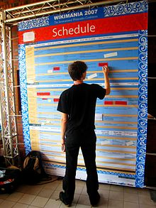
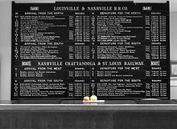

TIMETABLE

A schedule or a timetable, as a basic time-management tool, consists of a list of
times at which possible tasks, events, or actions are intended to take place, or of
a sequence of events in the chronological order in which such things are intended to
take place. The process of creating a schedule - deciding how to order these tasks and
how to commit resources between the variety of possible tasks - is called scheduling,
and a person responsible for making a particular schedule may be called a scheduler.
Making and following schedules is an ancient human activity.
Some scenarios associate "this kind of planning" with learning "life skills".
Schedules are necessary, or at least useful, in situations where individuals need to
know what time they must be at a specific location to receive a specific service, and
where people need to accomplish a set of goals within a set time period.
Schedules can usefully span both short periods, such as a daily or weekly schedule, and
long-term planning with respect to periods of several months or years. They are often
made using a calendar, where the person making the schedule can note the dates and times
at which various events are planned to occur. Schedules that do not set forth specific
times for events to occur may instead list algorithmically an expected order in which events either can or must take place.

In some situations, schedules can be uncertain, such as where the conduct of daily life relies
on environmental factors outside human control.People who are vacationing or otherwise
seeking to reduce stress and achieve relaxation may intentionally avoid having a schedule for a certain period of time.
Made by me. None rights reserved !